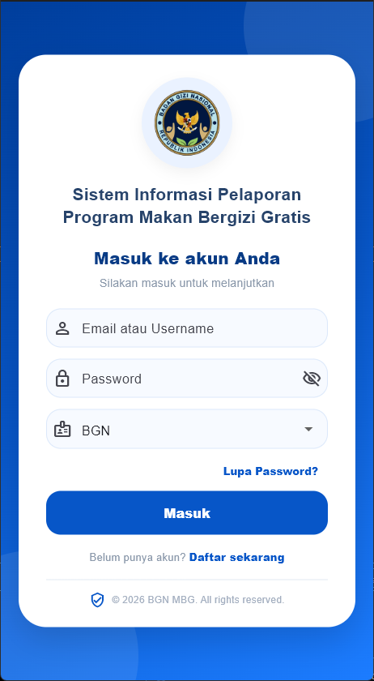
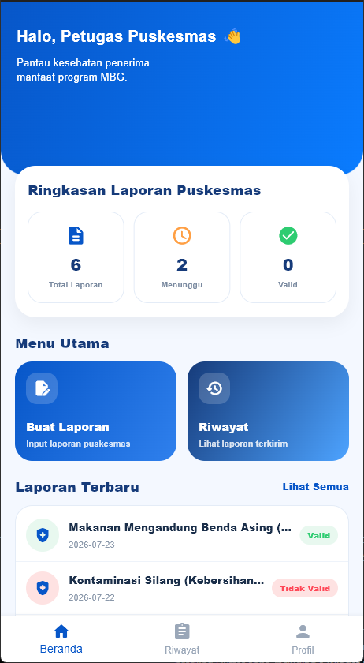
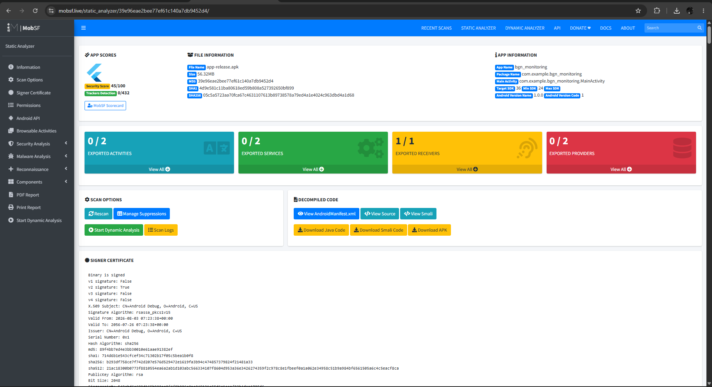

Mobile Development
Worked on the mobile application using Flutter and Dart, including interface implementation, application logic, and integration with application functionality.
Mobile Development · Software Testing
A mobile-based participatory supervision system developed to support monitoring activities within the National Nutrition Agency ecosystem.
Mobile Interface
The application provides role-based access, reporting features, history tracking, and monitoring workflows in a mobile-first interface.


01 — Overview
This project focused on a mobile application designed to support participatory supervision activities related to the National Nutrition Agency.
The application accommodates multiple user roles involved in the supervision process and provides mobile-based functionality to support reporting, monitoring, and data interaction.
I worked as the Mobile Programmer within the team, contributing to the mobile application while also participating in the testing process used to evaluate the system.
02 — My Role
Worked on the mobile application using Flutter and Dart, including interface implementation, application logic, and integration with application functionality.
Evaluated application functionality using Black Box Testing by comparing expected behavior with actual application results.
Used Flutter testing tools to validate individual application functions and confirm expected behavior.
Performed static application security analysis using MobSF to identify security-related findings within the Android application.
03 — Testing
Functional scenarios were tested across application roles to verify that each feature produced the expected output.
Individual functions were tested using Flutter's testing framework to validate application logic such as input validation.
MobSF was used for static security analysis of the Android application package.
Toolkit
04 — Results
Project Gallery
Screenshots and documentation from the application development and testing process.
